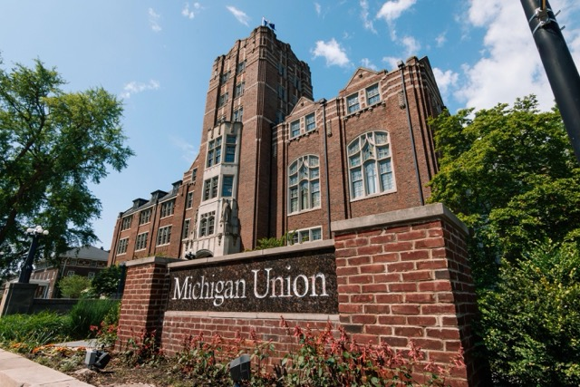

Mission
To foster the psychological development and emotional well-being of students through counseling and psychotherapy, preventive and educational programming, consultation and outreach, as well as contributions to the mental health professions. In collaboration with students, schools, colleges, and other units, Counseling and Psychological Services strives to develop a diverse, inclusive and multicultural community.
Services Provided
Counseling and Psychological Services offers a variety of services to help students:
- Consultation: CAPS provides consultation services both through the Counselor on Duty and through liaison relationships with departments, programs, schools, and colleges across campus.
- Individual Counseling: One-on-one counseling sessions
- Group Counseling: Counseling sessions with a group of students who share similar concerns
- Workshops: Educational workshops on topics such as stress management, mindfulness, and healthy relationships
- Outreach: Presentations and events to promote mental health awareness and destigmatize mental health issues
Clinical Service Limitations
Sometimes students present with needs that are beyond CAPS’s scope of practice and are best addressed in longer-term psychotherapy or by a therapist with a particular specialty. In these cases, the therapist will provide community referral options and will support the student in connecting with an appropriate off-campus provider.
Training Programs
CAPS training programs are designed to prepare ethical and multiculturally sensitive professionals who can move with competence, creativity and flexibility into a variety of positions providing clinical, consultation and outreach services to adults in outpatient settings.
- Social Work Internship
- Post Master of Social Work Fellowship
- Post Doctoral Fellowship in Professional Psychology
- Community Organizing Social Work Internship
- Doctoral Psychology Practicum
- APA Accredited Doctoral Internship
Location & Hours
Located in the Michigan Union, Suite 4079, 530 S. State Street, Ann Arbor, MI 48109
- Phone: 734-764-8312 (24hrs)
- Hours: Monday-Thursday: 8am - 6pm, Friday: 8am - 5pm, Saturday & Sunday: Closed
To view CAPS location on map Location